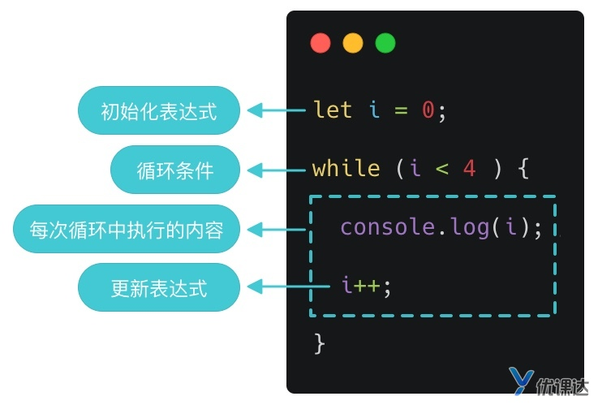
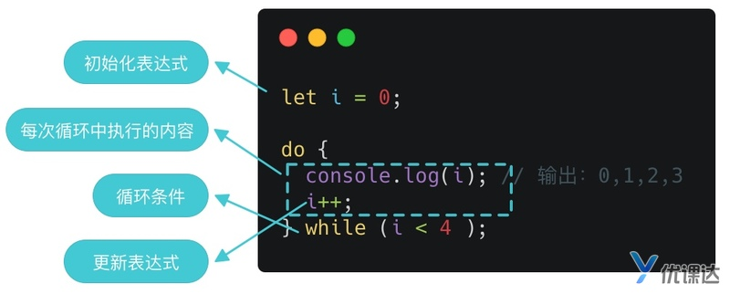
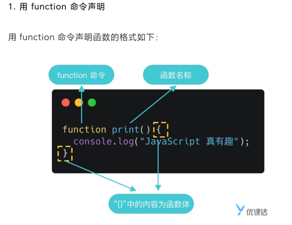
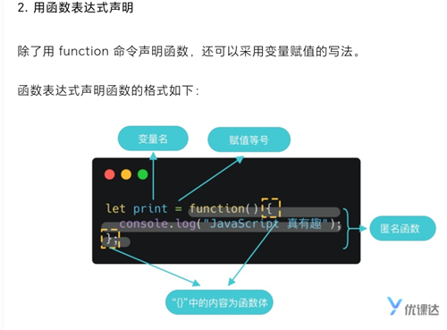
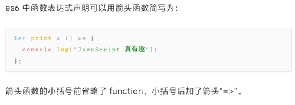
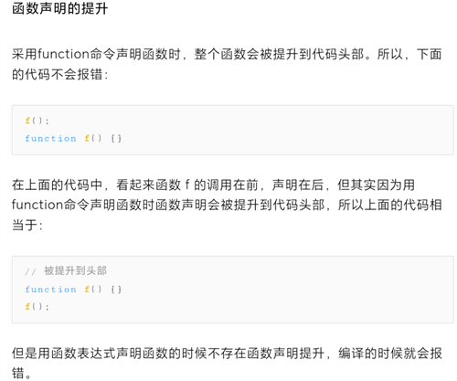
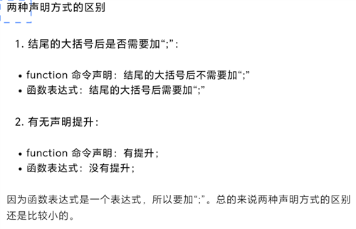
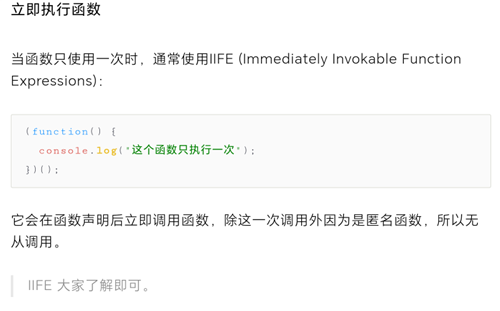
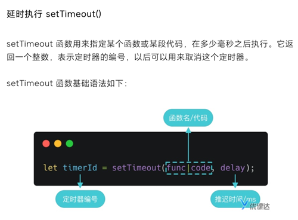
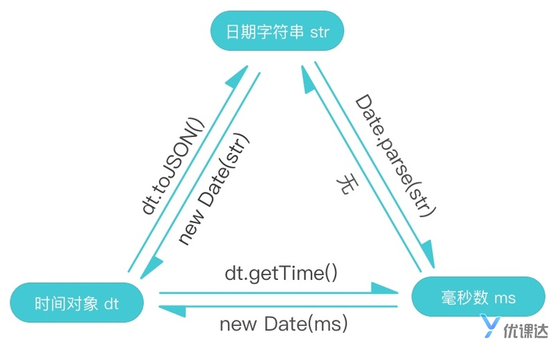

JavaScript主要由三部分组成：
ECMAScript规定了这门语言的基本组成部分，主要有以下几个部分组成：
DOM的功能简单来说呢就是可以获取到我们写的所有的html标签，并给标签添加或者删除样式，并可以给标签添加事件(例如点击、拖动等)。这些功能的实现是基于下面几种接口的：
BOM只会处理跟浏览器相关的东西，比如：
外部引入：
1<script src='index.js'></script>console表示访问控制台，log()表示在控制台输出信息，中间用点(.)连接，完整的写法是：
xxxxxxxxxx11<script>console.log("Hello World");</script>将字符串和变量拼接起来，要用加号（+）去拼接
模版字符串就可以简化书写，模版字符串的核心是反引号（``）和 占位符 ${expression}
x1let firstName = "胡";2let lastName = "雪岩";34let say = `大家好，我姓${firstName}，名${lastName}`;56console.log(say);js中也有转义符
模板字符串中的换行格式会被打印
在占位符中可以进行运算甚至写入三元表达式
用let定义变量(可以多次赋值)
用const定义变量(只可以赋值一次，且在定义时就要赋值)
0开头表示八进制数
0x十六
浮点数可以用 .2 进行赋值，但是并不推荐
e实现科学计数法
浮点数的最高进度是17位小数，但是在算数运算中其精度远不如整数
xxxxxxxxxx31let number1 = 0.1;2let number2 = 0.2;3console.log(number1 + number2); // 0.30000000000000004NaN 非数值 执行了数值运算，但是最终没有成功
在类型上是number（用typeof判断）
（判断：typeof x）
如0/0 字符乘数字 NaN和任何数进行运算
隐式转换
xxxxxxxxxx21console.log(20 + "20"); // 20202 xxxxxxxxxx31console.log("20" - 10); // 102console.log(10 * "10"); // 1003console.log(10 / "2"); // 5进行减法运算的时候,'20'会默认转换为 20,然后再进行运算
xxxxxxxxxx31console.log("20" - "10"); // 102console.log("20" / "10"); // 23console.log("20" * "10"); // 200强制类型转换
强制类型转换我们需要学习两个,parseInt(将小数字符串、整数字符串或者小数转换为整数)、parseFloat(将小数字符串转换为小数).
parseInt
xxxxxxxxxx11let converNumber = parseInt(number);小数转化为整数进行去尾操作
parseFloat
相等(==)和全等(===)运算符
js有布尔类型值 true false
空字符串和0为false 空格算非空字符串
逻辑运算 || &&
js中if等后面但语句也可以省略花括号
else if
js中存在switch语句
xxxxxxxxxx81switch（x）{2 case 'a':3 ;4 case 'b':5 ;6 7}8js switch语句穿透
在js中数组用[]表示，数组内容用逗号隔开，可以放不同类型的值，即数组可以实现嵌套, js也存在索引功能
创建数组：
数组元素操作
增
push方法
变量名.push( 要添加的值 );可以依次添加多个值，用逗号隔开
unshift方法(从头加)
删
pop方法(从后往前删)
shift方法(从前往后删)
splice方法(删除指定位置的值)
splice一个参数时，删除从指定开始位置到结束位置的所有元素，并返回被删除的元素
两个参数时，从指定位置开始，删除指定个数的元素
改
splice方法(必须三参数)
参数1起始位置，参数2表示步长，向后选几个元素(0表示当前元素)，参数3要替换的值
可以理解为数组的下标是在元素的左下角
查
indexOf()
一个参数
xxxxxxxxxx11let result = schools.indexOf('大连理工');返回查找的下标，如果未找到，返回-1
两个参数
参数2指定开始寻找的下标(返回的仍然是绝对下标，而非相对下标)
for循环与java语法一致
for...in 循环遍历的结果是数组元素的下标，而 for...of 遍历的结果是元素的值。
while


break
continue
这里要注意一下，因为 while 循环中，i++ 是放在“{}”中执行的，所以在执行 continue 之前要先执行 i++ 哦，不然会陷入死循环的。
获取随机数 Math.random() const num = Math.random(); 可以获得一个范围在 [0, 1) 之间的随机数 要获取 [100, 1000) 的数，那么 Math.random() 应该属于 [0.1, 1)。
我们处理一下：
// num1 的范围是 [0.1, 1) const num1 = Math.random() * 0.9 + 0.1; // num2 的范围是 [100, 1000) const num2 = Math.floor(num1 * 1000);
Math.floor(x) 是js内置方法，返回小于 x 的最大整数。比如，Math.floor(2.3) 返回 2，Math.floor(4.9) 返回 4。


记住没有new




函数可以接受多个参数，多个参数以“,”（英文逗号）分隔： JavaScript 允许传入任意个参数而不影响调用，因此传入的参数比定义的参数多也没有问题。这一点和 Java 有区别，在 JavaScript 中这样是不会报错的。 如果传入的数据比定义的参数少也不会因为数量不匹配而报错 参数默认值 function code(figure, txt = "随机数：")延时执行 setTimeout()

/**虽然 setTimeout 只能执行一次，但是我们可以用递归的方式来写计时器。 注意，函数可以调用本身，这就是递归（recursion）。 每隔一秒会执行一次代码，每次执行的代码要能够： 打印剩余秒数； 将秒数减一； 如果剩余秒数 >0，则调用 setTimeout 在一秒后重复上述的 1、2、3，否则不再调用，并清除计时器，即计时结束； // 首先定义计时总秒数，单位 s let i = 60; // 定义变量用来储存定时器的编号 let timerId; // 写一个函数，这个函数即每次要执行的代码，能够完成上述的 1、2、3 function count() { console.log(i); i--; if (i > 0) { timerId = setTimeout(count, 1000); } else { // 清除计时器 clearTimeout(timerId); } } // 首次调用该函数，开始第一次计时 count();
回调函数 用生活中当例子来解释回调函数就是：
你去商店预定中秋的月饼，预定的时候留下了你的手机号。等月饼到货后，店员给你打电话通知你去取。
手机号：回调函数； 到货：触发回调函数的具体条件； 到货后给你打电话：调用回调函数；
上面讲到的定时器 setTimeout 的第一个参数即“回调函数”，我们把函数指针（指向函数的指针变量）作为参数传给 setTimeout，当延时时间到了（触发条件达成）之后，就会通过函数指针调用函数，即调用回调函数。
setInterval，它的用法与 setTimeout 完全一致，区别仅仅在于 setInterval 指定某个任务每隔一段时间就执行一次，也就是无限次的定时执行。
什么是对象？简单说，对象就是一组“键值对”（key-value）的集合，是一种无序的复合数据集合：
person，则person将指向这个对象；name:'henry'：键值对（key: value），键值之间用:隔开；age: 18：键值对（key: value）；,隔开，最后一个键值对后可以加,，也可以不加。这里要注意，当一个对象被赋值给person，在person中保存的其实是对象的内存地址。而不是对象本身。这种赋值被称为“引用”。
这种定义对象的方法称为“字面量”。
键名
对象的键名基本都是字符串，键名加不加引号是一样的：
xxxxxxxxxx101let person = {2 name: 'henry',3 age: 184}56// 和上面的写法意思一样7let person = {8 'name': 'henry',9 'age': 1810}方法
对象的每一个键名又称为“属性”（property），它的“键值”可以是任何数据类型，当它是函数的时候，我们把这个属性称为“方法”，它可以像函数那样调用：
xxxxxxxxxx91let person = {2 name: 'henry',3 age: 18,4 run: function() {5 console.log('running');6 }7}89person.run();
对象的创建
除了上面提到的“字面量”方法，我们还可以通过构造函数创建新对象。
使用构造函数创建对象，我们需要两步走：
其中，构造函数可以声明对象的名称、属性和方法。
xxxxxxxxxx91// 第一步：创建构造函数2function People(name, age) {3 this.name = name;4 this.age = age;5}67// 第二步：通过 new 创建对象实例8let person = new People('henry', 18);9console.log(person);
属性的读取
JavaScript 中有两种方法读取一个对象的属性：点运算符和方括号运算符。
xxxxxxxxxx71let person = {2 name: 'henry',3 age: 184}56console.log(person.name);7console.log(person['name']);
属性的查看
查看一个对象本身的所有属性，可以使用Object.keys方法：
xxxxxxxxxx61let person = {2 name: 'henry',3 age: 184}56console.log(Object.keys(person));上述代码中的 Object，是 JavaScript 提供的基本对象，JavaScript 的所有其他对象都继承自Object对象，即那些对象都是Object的实例。keys 是 Object 对象的一个静态方法。
Object.keys(person)返回的是一个数组，这个数组由person对象的所有属性名构成
属性的删除和增加
如果要删除对象中的某个属性，可以使用 delete 命令
xxxxxxxxxx11delete person.name;直接增加
xxxxxxxxxx11person.gender = 'male';
在 JavaScript 中我们可以通过 for...in 或借助 Object.keys 来实现遍历对象的属性
xxxxxxxxxx141// 字面量2let o1 = {3 name: 'alice',4};56// 构造函数7let o2 = new Object();8let o3 = new Object();910// 继承11funtion O4() {12}; 13O4.prototype = o1; 14let o4 = new O4();属性是否存在：in
xxxxxxxxxx11'name' in person;自身属性是否存在：hasOwnProperty
xxxxxxxxxx11person.hasOwnProperty('name');
JSON
JSON 是一种轻量级的文本数据交换格式，它用 JavaScript 的语法书写，但独立于这种语言，可以认为这是编程语言间用于传递数据而约定的数据格式。
JSON 格式和 JavaScript 对象的转换
xxxxxxxxxx61// 一个 JSON 字符串2const jsonStr =3 '{"sites":[{"name":"Runoob", "url":"www.runoob.com"},{"name":"Google", "url":"www.google.com"},{"name":"Taobao", "url":"www.taobao.com"}]}';45// 转成 JavaScript 对象6const obj = JSON.parse(jsonStr);现在我们把上面得到的 obj 转成 JSON 格式：
xxxxxxxxxx11const jsonStr2 = JSON.stringify(obj)；
Map
Map 和 Object 很相似，都可以保存键值对，但是他们仍有些重要的区别：
从某种程度上来说，Map 比 Object 更灵活方便，但是考虑到 Map 不能直接转为 JSON 格式进行通讯，所以我们可以把 Map 作为 Object 的补充来使用。
Math对象的静态属性，提供以下一些数学常数：
xxxxxxxxxx81Math.E // 常数e。2Math.LN2 // 2 的自然对数。3Math.LN10 // 10 的自然对数。4Math.LOG2E // 以 2 为底的e的对数。5Math.LOG10E // 以 10 为底的e的对数。6Math.PI // 常数π。7Math.SQRT1_2 // 0.5 的平方根。8Math.SQRT2 // 2 的平方根。Math对象提供以下一些静态方法：
xxxxxxxxxx111Math.abs() // 绝对值2Math.ceil() // 向上取整3Math.floor() // 向下取整4Math.round() // 四舍五入取整5Math.max() // 最大值6Math.min() // 最小值7Math.pow() // 指数运算8Math.sqrt() // 平方根9Math.log() // 自然对数10Math.exp() // e的指数11Math.random() // 随机数注意，以上方法除了 Math.random() 都需要传入合适的参数，即需要处理的数字。
Storage 接口用于脚本在浏览器保存数据。两个对象部署了这个接口：window.sessionStorage 和 window.localStorage。
sessionStorage 保存的数据用于浏览器的一次会话（session），当会话结束（通常是窗口关闭），数据被清空；localStorage 保存的数据长期存在，下一次访问该网站的时候，网页可以直接读取以前保存的数据。
数据的存入：setItem
写法：
xxxxxxxxxx11window.localStorage.setItem('myLocalStorage', 'storage Value');清除缓存：clear
写法：
xxxxxxxxxx11window.localStorage.clear();
JavaScript 原生提供的三个包装对象：String、 Number和Boolean
String:
| 属性/方法 | 作用 |
|---|---|
| str.length | 返回字符串长度 |
| str.indexOf(sub) | 返回子字符串 sub 的开始下标，不存在则返回 -1注意：这里的参数 sub 是个字符串变量 |
| str.trim() | 字符串前后去空格 |
| str.substring(s, e) | 截取下标从 s 到 e 的子字符串注意：这里的参数 s 和 e 是个数字变量 |
| str.substr(s, len) | 截取下标从 s 开始，长度为 len 的子字符串注意：这里的参数 s 和 len 是个数字变量 |
| str.split(pattern) | 按规格 pattern 分割字符串注意：这里的参数 pattern 是个字符串变量 |
注意，substring 和 substr 的第二个参数不写的时候，会一直截取到字符串结束为止。它们和 trim 一样都不会改变原字符串，而是返回处理后的字符串。
.join()连接数组
.reverse()倒序 该方法将改变原数组
.sort()排序 也改变原数组
map/forEach遍历
有返回值的遍历map
xxxxxxxxxx71// elem: 数组成员2// index: 成员下标3// a: 整个数组4const handledArr = arr.map(function (elem, index, a) {5 console.log(elem, index, a);6 return elem.name;//返回的值会存储到handledArr中7});无返回值的遍历：forEach
forEach 的用法和 map 基本一致，不过 forEach 没有返回值：
xxxxxxxxxx61const handledArr = arr.forEach(function (elem, index, a) {2 console.log(elem, index, a);3 return elem.name;4});56console.log(handledArr);//undefined
new Date() 不加参数默认获取当前时间
xxxxxxxxxx111// 传入表示“年月日时分秒”的数字2let dt1 = new Date(2020, 0, 6, 0, 0, 0);3console.log(dt1);45// 传入日期字符串6let dt2 = new Date("2020-1-6");7console.log(dt2);89// 传入距离国际标准时间的毫秒数10let dt3 = new Date(1578240000000);11console.log(dt3);
- 如果只传入一个数字，会被认为传入的是毫秒数；
- 月份的范围是 0-11，而不是 1-12。
日期运算
时间差：毫秒数
两个时间对象是可以直接相减的，返回值为两者的毫秒数差：
xxxxxxxxxx101let dt1 = new Date(2020, 2, 1);2let dt2 = new Date(2020, 3, 1);34// 求差值5let diff = dt2 - dt1;67// 一天的毫秒数8let ms = 24 * 60 * 60 * 1000;910console.log(diff / ms); // 31可以用大小于号进行早晚比较
Date.parse() 解析日期字符串
返回该时间距离时间零点（1970 年 1 月 1 日 00:00:00）的毫秒数
xxxxxxxxxx21let dt = Date.parse("2020-1-6");2console.log(dt); // 1578240000000事件对象有三大方法
to、get、set方法
xxxxxxxxxx41let dt = new Date();2let dtStr = dt.toJSON();34console.log(dtStr); // 2020-01-03T09:44:18.220ZDate 对象提供了一系列 get 方法，用来获取实例对象某个方面的值：
xxxxxxxxxx101let dt = new Date();2dt.getTime(); // 返回实例距离1970年1月1日00:00:00的毫秒数。3dt.getDate(); // 返回实例对象对应每个月的几号（从1开始）。4dt.getDay(); // 返回星期几，星期日为0，星期一为1，以此类推。5dt.getFullYear(); // 返回四位的年份。6dt.getMonth(); // 返回月份（0表示1月，11表示12月）。7dt.getHours(); // 返回小时（0-23）。8dt.getMilliseconds(); // 返回毫秒（0-999）。9dt.getMinutes(); // 返回分钟（0-59）。10dt.getSeconds(); // 返回秒（0-59）。
注意，所有这些 get*方法返回的都是整数，不同方法返回值的范围不一样： 分钟和秒：0 到 59 小时：0 到 23 星期：0（星期天）到 6（星期六） 日期：1 到 31 月份：0（一月）到 11（十二月）
set 方法和 get 方法正好相反，它能够设置时间对象的某个方面的值。
xxxxxxxxxx91let dt = new Date();2dt.setTime(ms); // 设置实例距离1970年1月1日00:00:00的毫秒数。3dt.setDate(date); // 设置实例对象对应每个月的几号（从1开始）。4dt.setFullYear(year); // 设置四位的年份。5dt.setMonth(month); // 设置月份（0表示1月，11表示12月）。6dt.setHours(hour); // 设置小时（0-23）。7dt.setMilliseconds(ms); // 设置毫秒（0-999）。8dt.setMinutes(min); // 设置分钟（0-59）。9dt.setSeconds(sec); // 设置秒（0-59）。
set 方法没有 setDay 方法，因为星期几是计算得到的。
同样的，以上方法了解即可，需要用到的时候在 MDN 上进行查询即可。

// 排序
infoList.sort((a, b) => {
const aStartDate = new Date(a.startTime);
const bStartDate = new Date(b.startTime);
return aStartDate > bStartDate ? 1 : -1;
});
// 格式化
infoList.forEach(info => {
info.formattedDate = formatDate(info.startTime);
});
// 打印结果
console.log(infoList);
function formatDate(dtStr) {
const dt = new Date(dtStr);
const year = dt.getFullYear();
const month = dt.getMonth() + 1;
const day = dt.getDate();
const hour = dt.getHours();
const min = dt.getMinutes();
return year + '年' + month + '月' + day + '日 ' + hour + '点' + min + '分';
}